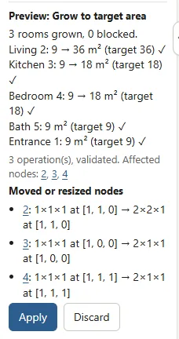

Page 5 of 16 · In the browser
Exercise 1: your own transform
Write a transform that changes an attribute value on a condition, and upload it straight into the app. No repository needed: only a browser and an AI chat.
The exercise
Set Number of beds to 2 for every Bedroom larger than 12 m².
Once it works, try your own condition and value.Orange ___ = fill in your own. Grey buttons like Copy = something to click.
01Open a design with Bedrooms
The House example has them.
Open a design with Bedrooms
The House example has them.
- Open the exampleIn the app: Welcome › Open example… › Simple house.
- Make a Bedroom larger than 12 m²Transform › Grow to target area › Run › Apply. The Bedroom grows from 9 to 18 m².
Why?
A test needs a design whose answer you know: after this, one Bedroom is larger than 12 m², so your transform should change exactly that one.
02Add the attribute “Number of beds”
Every node gets it.
Add the attribute “Number of beds”
Every node gets it.
- Add itAttributes (left rail) › + Add attribute › Custom attribute.
- Name itName Number of beds, kind Number.
it is listed under Attributes, tagged Yours.
03Describe it in a few lines
This fills in the starting text below.
Describe it in a few lines
This fills in the starting text below.
Remembered in this browser only.
04Download the Transform kit for this project
In the app, so that it knows your Functions and attributes.
Download the Transform kit for this project
In the app, so that it knows your Functions and attributes.
- Open the kitsTransform › the ⓘ beside Upload your own (.ts) › tab This project.
- Download itTransform kit for this project (.zip).
a zip in your Downloads folder.
Why “for this project”?
Its PROJECT.md lists your project's Functions (Bedroom…) and custom attributes (Number of beds…), so the AI uses their exact names. The kit never contains your design.
05Ask an AI chat
Attach the kit, send the starting text, answer its questions.
Ask an AI chat
Attach the kit, send the starting text, answer its questions.
Transform kit for this project
I've attached the Spatial Graph Lab transform kit for my project. Read PROMPT.md, PROJECT.md and every file in it first, then ask me your clarifying questions before you write any code. After my answers, write ONE transform that follows them exactly. It may use my project's Functions and custom fields as PROJECT.md lists them. My idea: ___ Parameters I want to set: ___ What it should change: ___
Transform kit (any project)
For a transform that uses no custom attributes and works in every project.
I've attached the Spatial Graph Lab transform kit. Read PROMPT.md and every file in it first, then ask me your clarifying questions before you write any code. After my answers, write ONE transform that works in any project (node basics only, no custom fields). My idea: ___ Parameters I want to set: ___ What it should change: ___
- Open a new chat and attach the kit zipAny AI chat that accepts files, such as claude.ai, chatgpt.com or gemini.google.com.
- Paste the starting text and send itUse Copy on the dark box above.
- Answer its questionsIt asks before it writes any code. Then it gives you one
.tsfile.
The chat refuses the zip (fix)
Unzip it and attach the .md files inside instead, or try another chat.
06Save the file it gives you
One .ts file, with the name the AI suggests.
Save the file it gives you
One .ts file, with the name the AI suggests.
Download the file the chat offers, for example two-beds-in-large-bedrooms.ts.
Only code shown?
Ask “Please give me this as a file”, or save it yourself as on page 04: the name must end in .ts, not .ts.txt.
07Upload it, preview it, Apply it
Nothing changes until you press Apply.
Upload it, preview it, Apply it
Nothing changes until you press Apply.
- UploadTransform › Upload your own (.ts) › choose the file.
it is listed under Yours.
- Run itChoose it and press Run.
a preview: Number of beds of the large Bedroom, before → 2. Your design has not changed yet.
- ApplyApply changes the design in one step; Discard drops the preview. One Undo reverses it all.
- Check itSelect the Bedroom: Properties shows Number of beds 2.

Refused, or an error in the preview?
Copy the app's whole message into the chat and ask: “Fix exactly this.” Then use ↻ (Replace) beside it in Yours with the new file. An analysis (it only reads) is refused here: upload it in Analyse (page 04).
Then Project › Export project: the file keeps your transform.
Problems: Apply is greyed out · “customOf needs a Function…” · all upload problems.